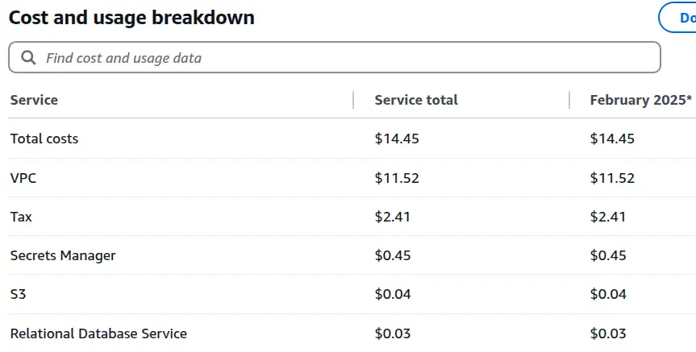
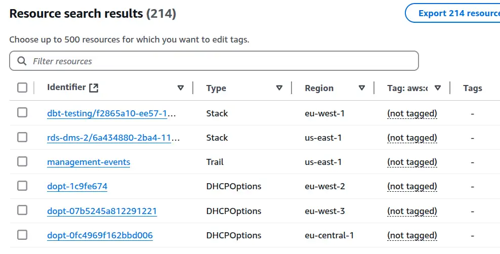
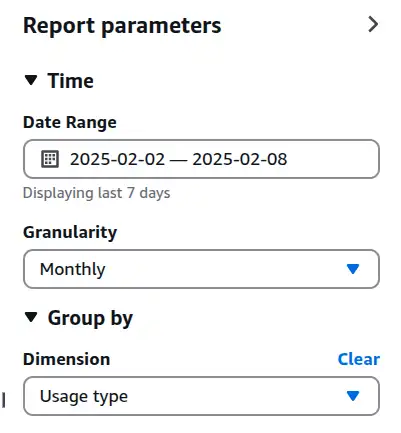
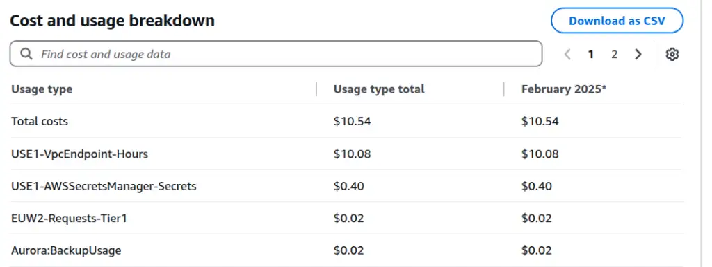
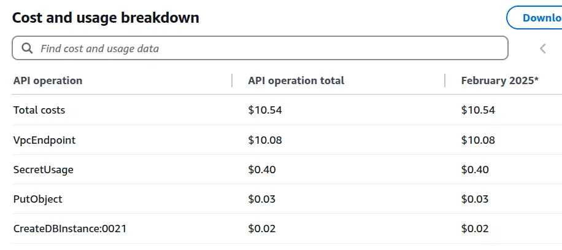
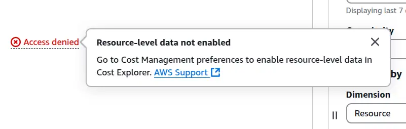

Using AWS billing to track down lost resources

My AWS bill was higher than I expected, and it wasn't immediately clear what was driving the cost. Here's how I tracked down the culprits.
The mystery bill¶
I'd been running an RDS + DMS CloudFormation stack for a few months as part of my CDC writing. Expect a post at some point going over the obvious and more subtle costs involved. When I tore the stack down in January 2025, I was still getting a bill of a couple of dollars a day and I wasn't sure why.
When I tore the stack down, one resource was left behind - the AWS bucket that DMS wrote the change data capture stream into. It contains very little data though, so it shouldn't be running up a noticeable bill. I could do without a $64-per-month bill for nothing. How can I find these resources?
Billing - cost explorer¶
My next step is to click the offending dollar value on the homepage, which takes me to the cost explorer. Here, I see a fairly useless chart of the current month's costs, with a very useful list of costs by service.
Being cost-curious
I've learned a lot over the years by being curious about costs - and I've used that knowledge to save clients money. If you can see these actual/predicted cost numbers when you head to the homepage, I'd recommend clicking in and taking a look around. It'll help you understand what's expensive and what's not, and there's a chance you'll spot something consuming money for nothing - a prime target for quick and easy cost-efficiency improvements. If you can't see these numbers and would like to, try clicking the AWS console home link (Top left in the console) or asking your administrator.


This view is a useful first step. The costs are in the VPC service, ruling out the S3 bucket as the cause. Unfortunately, VPC covers a lot of different kinds of resources - how do I track down the ones that are costing me money?
Tag editor¶
AWS is a big, complex beast and I've had problems sometimes tracking down deployed resources that cost money - particularly tricky when the resources are deployed in a region you're not expecting! The Tag Editor allows the enumeration of resources across regions, but as far as I know, it's not straightforward to use to track down these resources. I have very little deployed into this account, but when I search across all regions for all resources, I see the following:


The vast majority of the resources I see are, I believe, network-related resources that AWS deploys by default into all regions for my account. Perhaps I should go through and delete all that stuff, assuming it won't cause any problems in my account. There are no tags against any resources other than the S3 bucket I already know about and an account I custom-tagged with a client identifier. None of it helps me understand what's costing me this money.
Should I just tag all the things?
I have had the thought that maybe I should be tagging stuff to help in this kind of situation. Whilst it might help, I don't think it would guarantee anything - I suspect there would still be resources that get created automatically as part of my efforts that don't get tagged. Whilst custom tagging might be useful, I still need a way of finding stuff that falls outside or pre-dates my tagging strategy anyway.
Back to cost explorer¶
I've found the most effective tool to track down these resources is back in the billing console.
Cost by usage type¶
I switch the breakdown to usage type in the report parameters section, like this:


Again, the chart isn't very useful, but the breakdown panel underneath is.


Aha. This table is packed with useful information.
USE1-VpcEndpoint-Hours is responsible for almost all the cost - VPC endpoints in us-east-1. That makes sense - I had to have private endpoints to get from the RDS database locked away in a private VPC to the S3 and Secrets Manager services. I expected them to get cleaned up as part of my CloudFormation destroy operation, but it seems they did not.
I'm also paying for USE1-AWSSecretsManager-Secrets - makes sense, I had a secret in there, the RDS database password, which hasn't been cleaned up in the destroy. Aurora:BackupUsage also makes sense - I have some backups of the RDS database. Aside from being in eu-west-2, the culprit behind EUW2-Requests-Tier1 isn't clear. I can switch the breakdown from "Usage type" to "API operation" to get another useful perspective.
Cost by API operation¶


PutObject and CreateDBInstance:0021 look like possible culprits. There's no region information available here, so I find API operation and usage type work well together to shed actionable insights on costs.
API operation and usage type together¶
Where I'm confused about what a billing item is, I can combine usage type and API operation, with one as dimension and the other as a filter, to clear up the confusion. To understand CreateDBInstance:0021, I set usage type as the dimension and API operation as a filter in the report parameters. There's exactly one item in the output table now.
| API operation | Value |
|---|---|
| Aurora:BackupUsage | $0.03 |
That clears that one up. How about EUW2-Requests-Tier1? Resetting the filters to usage type EUW2-Requests-Tier1 and setting API operation as the dimension, I'm told:
| API operation | Value |
|---|---|
| PutObject costs | $0.03 |
| PutObject usage | 5,340.00 Requests |
Not sure what's causing those PutObject requests in this account, but at least I know what I'm looking for now!
Cost by resource¶
There is another option in the "Dimension" drop-down - "Resource". When I click this option, I get access denied


I need to turn on resource-level billing information to use this feature. It may contain even more explicit information, but I've found I get can get enough out of the on-by-default views I've already covered to solve my problems. I've turned it on anyway but it takes a while to become effective. I'll follow up if the information or cost associated with this feature is worth shouting about.
Summary¶
AWS Billing's cost explorer reporting is packed with actionable information to track down costs, including service, region and API operation usage. Using these different perspectives together can help quickly find the resources responsible, regardless of which region or service they're hiding in.
Feedback
If you want to get in touch with me about the content in this post, you can find me on LinkedIn or raise an issue/start a discussion in the GitHub repo. I'll be happy to credit you for any corrections or additions!
If you liked this, you can find content from other great consultants on the Equal Experts network blogs page 
- Thanks to
 for supporting this content.
for supporting this content.